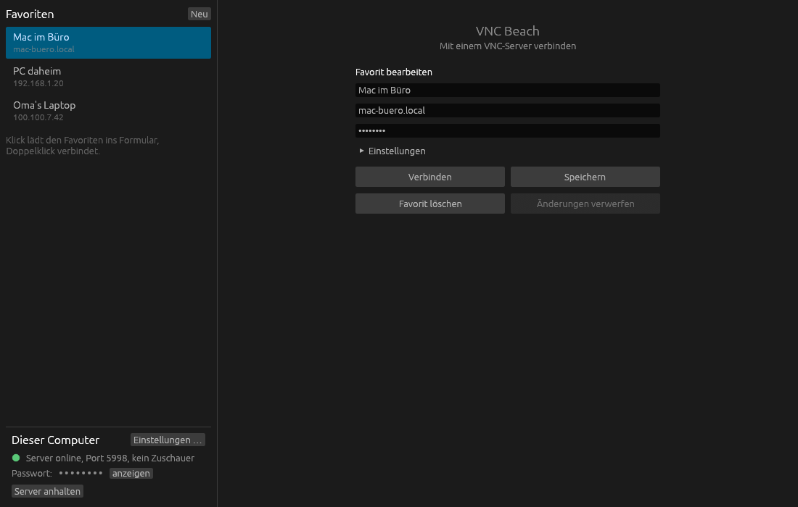

VNC Beach ist ein VNC-Server und -Viewer für macOS und Windows. Er spricht das ganz normale VNC-Protokoll, kostet nichts und wird nichts kosten.
Builds für Windows und macOS liegen bei den GitHub-Releases. Wer mag, baut selbst mit cargo.

Ein Viewer und ein Server für beide Systeme. Auf dem Mac geht auch die eingebaute Bildschirmfreigabe, nur die Zwischenablage gibt es dann nicht.
VNC Beach spricht Standard-VNC nach RFC 6143, ohne eigene Protokollerweiterungen. Darum verträgt es sich mit TigerVNC, RealVNC, Remmina, der Bildschirmfreigabe von macOS und allem anderen, das VNC kann – in beide Richtungen.
Eine Datei, keine Installation. Beim ersten Start zeigt der Viewer links die Favoriten und auf Windows den Stand des eigenen Servers.
vnc-beach.exe aus dem Release laden und starten.Rust installieren, dann:
git clone https://github.com/realS3BI/vnc-beach cd vnc-beach cargo build --release --workspace # Viewer: target/release/beach-viewer # Server: target/release/beach-server --password geheim